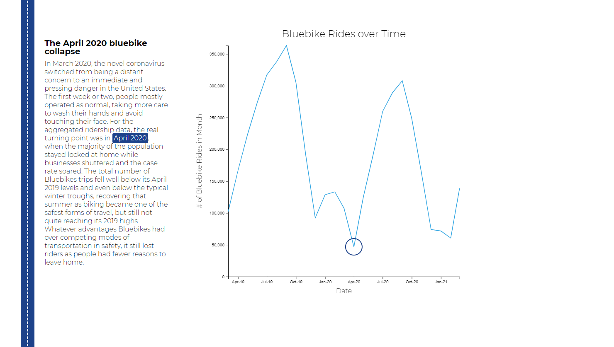

6.859 Final Project
Bluebikes during the pandemic
Ahmed Elbashir and Belinda Shi
A scrollytelling journey containing four visualizations examining the impact of the COVID-19 Pandemic on Bluebikes ridership. The data is sourced directly from Bluebikes records on individual trips, and the visualizations illuminate different aspects of the way people used Bluebikes following the onset of the pandemic. Interactive elements and textual descriptions accompanying each visualization provide more information and context that cannot be captured with numbers alone, highlighting key observations and providing background information.

Final Paper
Video
Project Page